看到这里，我们已经明白，以某种提前设定好的方式替换字符的加密方法，通常很容易被破译者破解。
1929年，美国数学家莱斯特·S.希尔（Lester S. Hill）结合模运算和线性代数发明了一套新的加密系统，申请专利后意欲销售，但未成功。
接下来我们可以看到，在加密信息时，矩阵是一个非常有效的工具，可以把文本编为一个个字母对，每个字母都有对应数值。
我们用矩阵加密一条信息：
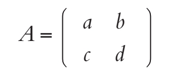
限制条件是行列式为1，即ad-bc=1。使用逆矩阵解密这条信息：
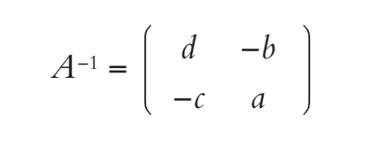
对行列式的值的限制条件确定后，逆矩阵就可以作为解译工具进行运算了。通常，含有n个字符的字母表，其gcd（A,n的行列式）=1。如果对应结果正确，那么模运算可以逆向就不能确定了。
简单了解线性代数
矩阵是指先排列“行”再排列“列”的数字表格。比如，2×2矩阵的形式为：
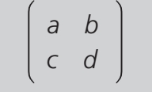
2×1矩阵的形式为：
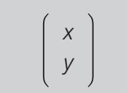
两个矩阵相乘得到一个新的2×1矩阵，叫作列向量：
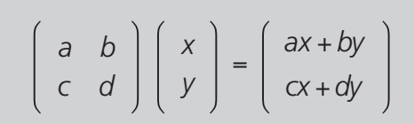
在2×2矩阵中，ad-bc的值叫作矩阵的行列式。
继续看刚才的例子，取26个字母的字母表，加上一个代表“空格”的字符（方便起见，我们在此用@表示“空格”）。每个字母都赋予一个数值，如下所示：
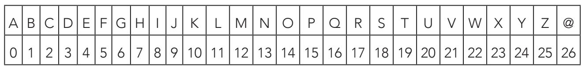
计算0和26之间的值，要用模27进行运算。
加密和解密文本的过程如下页所示：首先确定行列式为1的加密矩阵A。
比如，
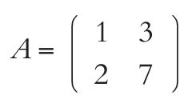
解密矩阵就是逆矩阵
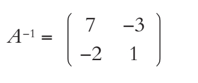
因此，A就是加密密钥，而A−1是译解密钥。
下面，我们以信息“BOY”（男孩）为例。信息中的字母成对分为：BOY@。在表中对应的数字也以成对的方式列出来，即（1,14）和（24,26）。接下来，每对数字均乘以矩阵A：
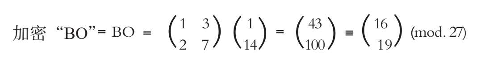
根据表格，所得结果对应的字母为（Q,T）；
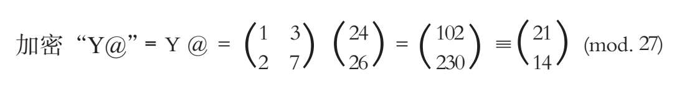
根据表格，所得结果对应的字母为（V,O）。
最终，信息“BOY”加密为“QTVO”。
译解时，使用矩阵进行逆向运算：
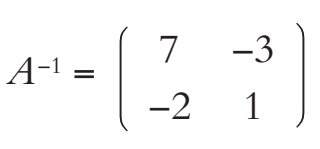
得到字母对（Q,T），在表格中对应的数值为：(16,19)，然后乘以A−1，得到：
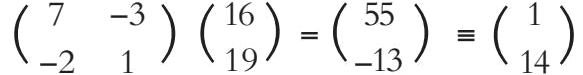
(mod. 27),对应字母对(B, O)；同理，第二组字母对（V,O）对应的数字为（21,14），得到：
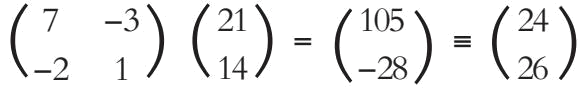
(mod.27),对应(Y, @)。以上便是译解密钥的过程。
在这个例子中，我们用的是两个字符对。如果把字母分为三个一组甚至四个一组时，保密性会大大增强。在这些情况中，计算时各自使用3×3矩阵和4×4矩阵，如果手动计算的话，是极为费时耗力的。不过，借助现代计算机，计算大型矩阵及相应的逆矩阵已成为可能。
但是希尔密码有很大的弱点：信息接收者拿到明文的一个小片段，就有可能破解整个信息。显然探索完美密码的征程远未结束。